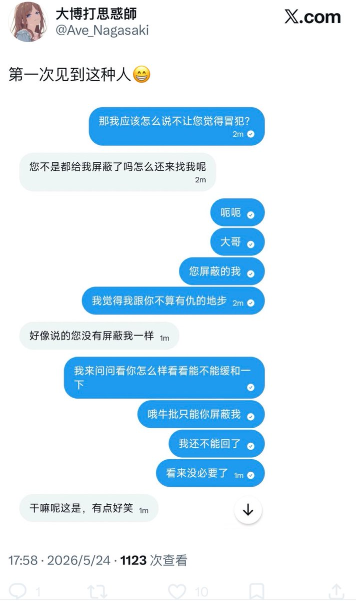

奶昔🥤
@realNyarime
@Ayn_kitkia 不要理他，直接屏蔽回去就行，浪费你的精力🥹

AyaNO₃
@Ayn_kitkia
我真他妈的操了，有没有人知道怎么把已经删除会话的聊天记录找摸回来啊？我这儿还没言语呢，丫倒先给我挂这儿晾着了。
大号给你B了，来小号找我第一句话就是，我觉得你最近过的不好。
首先我自个儿过的好不好跟丫有关系吗？咸吃萝卜淡操心。其次说这话礼貌吗？我是不是给你丫好脸给多了。 https://t.co/BNdrAoyW6u